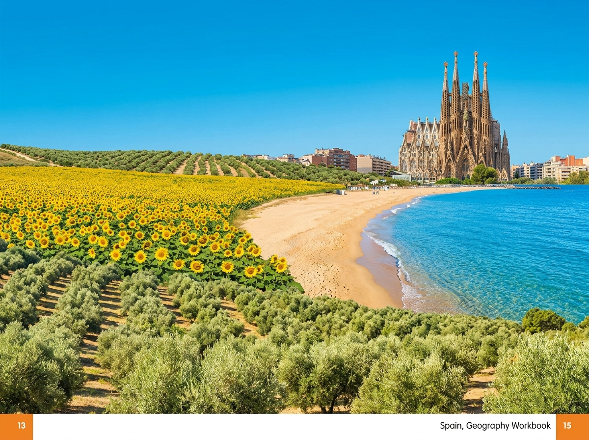
Hier stehen die wichtigsten Daten zu deinem Land. In der App baust du daraus deinen eigenen Steckbrief.
| Hauptstadt | Madrid |
| Kontinent | Europa |
| Sprache | Spanisch (in einigen Regionen auch Katalanisch, Baskisch und Galicisch) |
| Währung | Euro |
| Einwohner | rund 49 Millionen Menschen |
| Fläche | etwa 506.000 km², rund anderthalb Mal so groß wie Deutschland |
| Großer Berg | der Teide auf Teneriffa, rund 3.718 m, der höchste Berg Spaniens; auf dem Festland der Mulhacén mit rund 3.479 m |
| Nachbarländer | Portugal, Frankreich und Andorra; im Süden nur 14 km von Afrika entfernt |
In Spanien gibt es viele berühmte Orte. Diese vier solltest du kennen.
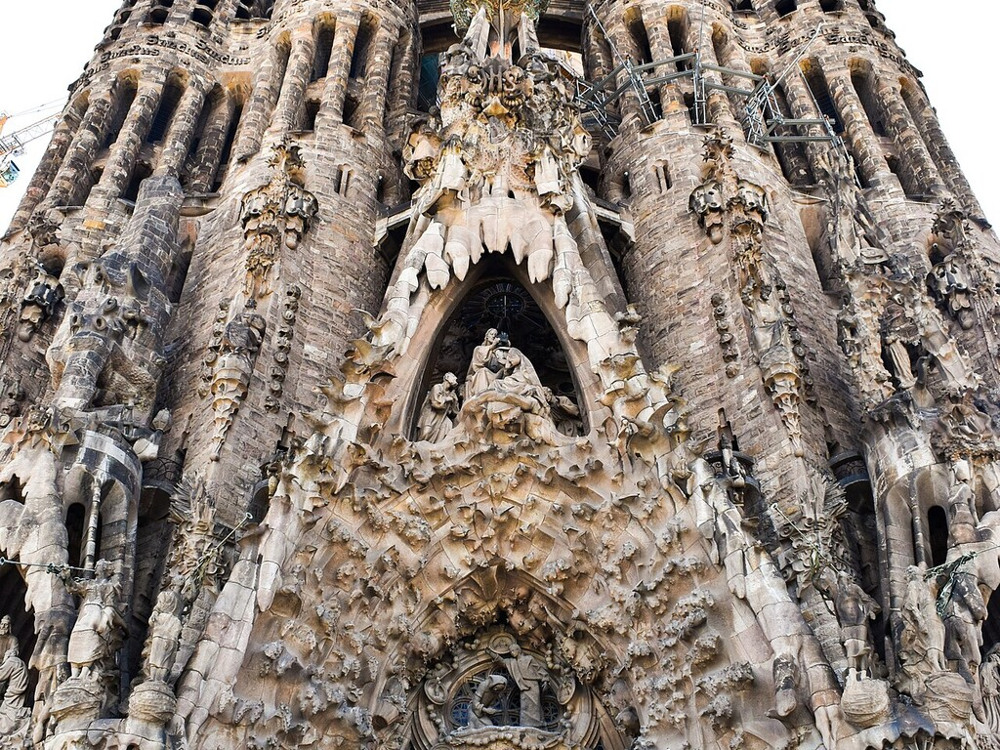
Sagrada FamíliaDie Sagrada Família ist eine riesige Kirche in der Stadt Barcelona. Der Baumeister Antoni Gaudí hat sie entworfen. Schon seit dem Jahr 1882 wird daran gebaut, und sie ist immer noch nicht ganz fertig. Mit ihren hohen Türmen sieht sie aus wie keine andere Kirche.
Grüne Wörter für die AppKirchein BarcelonaAntoni Gaudíhohe Türmeseit 1882
AlhambraDie Alhambra ist eine alte Burg in der Stadt Granada. Sie liegt auf einem Hügel und hat schöne Bögen und Gärten. Vor vielen hundert Jahren haben arabische Herrscher sie gebaut. Heute kommen Menschen aus aller Welt, um sie anzuschauen.
Grüne Wörter für die Appalte Burgin Granadaauf einem HügelBögenarabische Herrscher
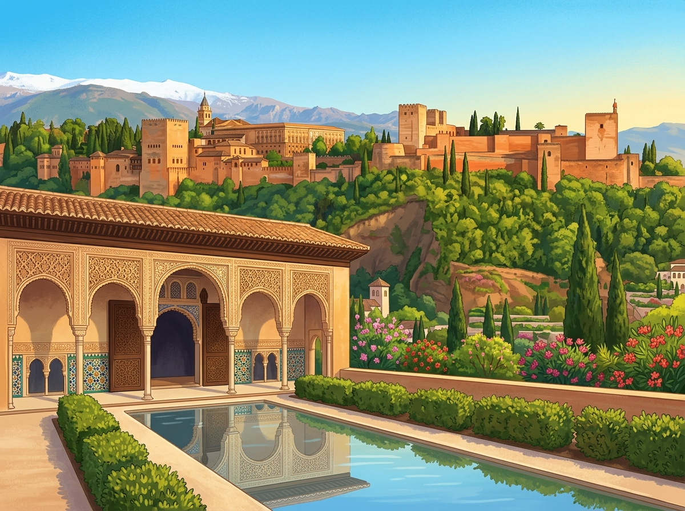
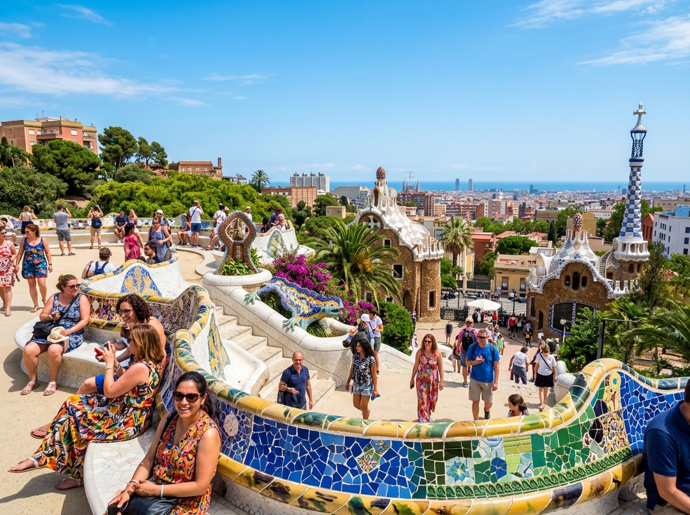
Park GüellDer Park Güell ist ein bunter Park in Barcelona. Auch ihn hat Antoni Gaudí gestaltet. Überall gibt es Mauern und Bänke aus kleinen, bunten Fliesen. Eine große Echse aus Fliesen ist besonders berühmt.
Grüne Wörter für die Appbunter Parkin BarcelonaAntoni Gaudíbunte Fliesenberühmte Echse
Strände und InselnSpanien hat viele schöne Strände am Meer. Vor der Küste liegen Inseln wie Mallorca und die Kanarischen Inseln. Dort ist es oft warm und sonnig. Viele Menschen machen hier Urlaub und baden im Meer.
Grüne Wörter für die AppSträndeam MeerMallorcaKanarische InselnUrlaub
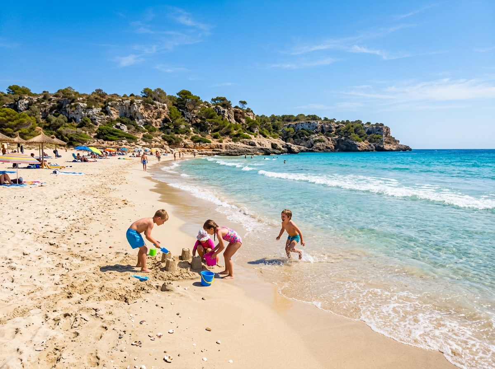
In Spanien leben Tiere, die du bei uns kaum in der Natur findest.
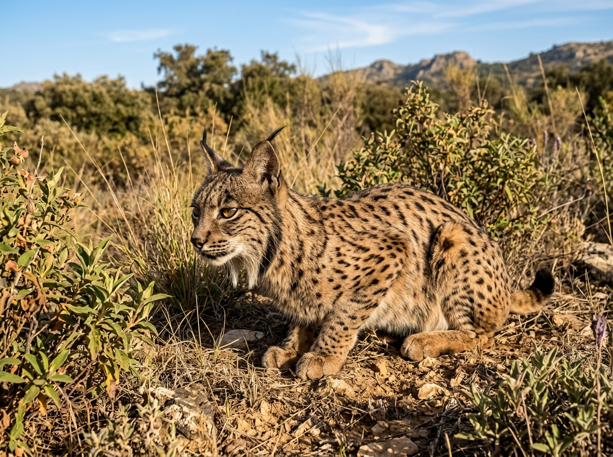
Iberischer LuchsDer Iberische Luchs ist eine seltene Wildkatze. Er lebt nur in Spanien und Portugal. Lange gab es nur noch sehr wenige von ihnen. Heute werden es langsam wieder mehr. Man erkennt ihn an den spitzen Ohren mit kleinen Pinseln.
Grüne Wörter für die AppWildkatzeSpanien und Portugalseltenspitze OhrenPinsel an den Ohren
FlamingoIm Süden von Spanien leben viele rosa Flamingos. Sie stehen in flachen Seen, die man Lagunen nennt. Mit ihren langen, dünnen Beinen waten sie durch das Wasser. Ihr Gefieder ist rosa, das kommt von ihrem Futter.
Grüne Wörter für die Approsa Vogellange Beineflache SeenLaguneim Süden
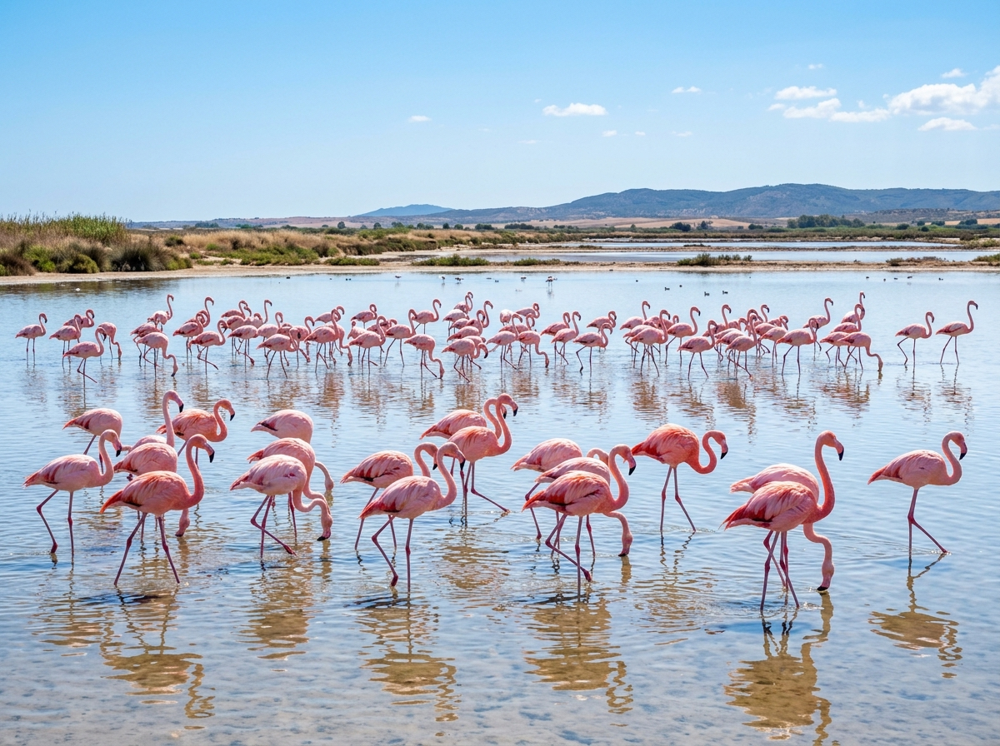
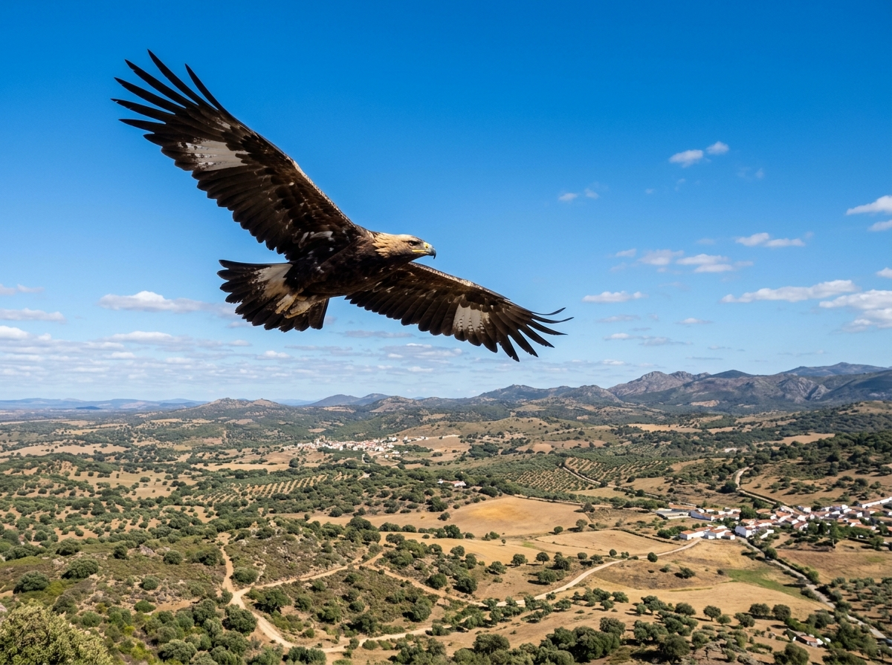
Spanischer KaiseradlerDer Spanische Kaiseradler ist ein großer, seltener Adler. Er kommt nur in Spanien vor. Mit seinen breiten Flügeln kreist er hoch am Himmel. Von dort oben sucht er nach Beute.
Grüne Wörter für die Appgroßer Adlersehr seltennur in Spanienbreite Flügelkreist am Himmel
In der App kannst du beim Essen das Foto nehmen oder dein Gericht selbst malen.
PaellaPaella ist ein buntes Reisgericht. Ein Gewürz mit dem Namen Safran macht den Reis schön gelb. Dazu kommen je nach Gegend Meeresfrüchte, Huhn oder Gemüse. Man kocht die Paella in einer großen, flachen Pfanne.
Grüne Wörter für die AppReisgerichtgelber ReisSafranMeeresfrüchtegroße Pfanne
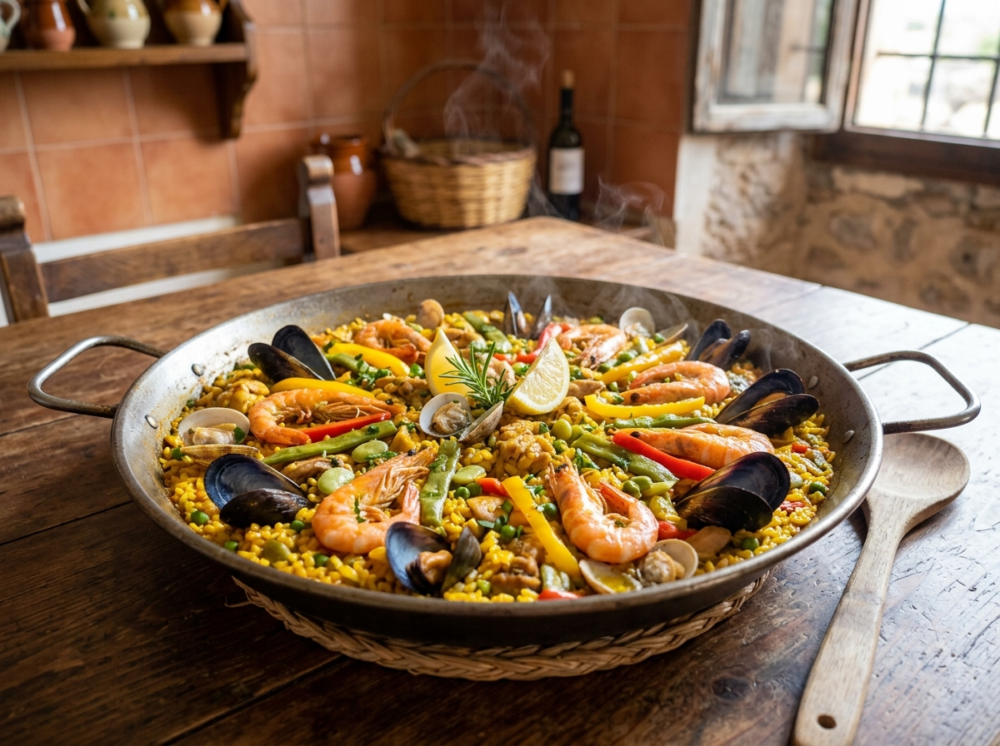
Tortilla españolaDie Tortilla española ist ein dickes, rundes Omelett. Man macht sie aus Eiern und Kartoffeln. Man kann sie warm oder kalt essen. Oft gibt es sie als kleinen Snack, manchmal auch als ganze Mahlzeit.
Grüne Wörter für die Appdickes Omelettaus Eiernmit Kartoffelnrundwarm oder kalt
ChurrosChurros sind lange, frittierte Teigstreifen. Sie sind außen knusprig und schmecken süß. Am liebsten taucht man sie in heiße Schokolade. Viele Kinder essen sie zum Frühstück oder am Nachmittag.
Grüne Wörter für die AppTeigstreifenfrittiertsüßheiße Schokoladezum Frühstück
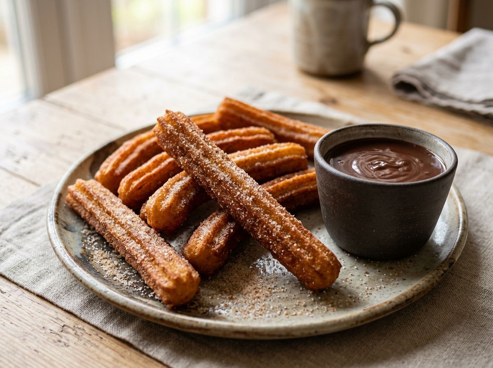
⚽ Gut zu wissen
Die Fußball-Nationalmannschaft von Spanien hat den Spitznamen La Roja, das heißt die Rote. Sie spielt im roten Trikot. Spanien gehört zu den besten Mannschaften der Welt. Im Jahr 2010 wurde Spanien Weltmeister, und 2024 wurde es Europameister. Auch bei der WM 2026 ist Spanien dabei und einer der Favoriten.
Grüne Wörter für die AppLa Rojarotes TrikotWeltmeister 2010Europameister 2024bei der WM 2026
🌟 Profi-Wissen
Spanien wurde 2010 zum ersten Mal Weltmeister. Das Team spielte damals sehr besonderen Fußball, den man Tiki-Taka nennt: viele kurze Pässe, wenig Risiko. Bekannte Spieler waren Xavi und Iniesta. Die Nationalmannschaft heißt La Roja, das bedeutet Die Roten.
Grüne Wörter für die App2010 WeltmeisterTiki-TakaXaviIniestaLa Roja
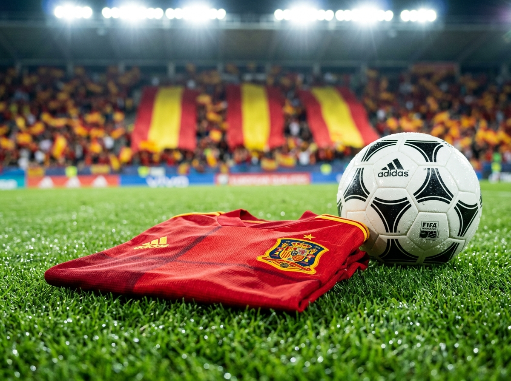
Schule in SpanienIn Spanien beginnt der Schultag oft erst um neun Uhr. Dafür dauert er bis in den späten Nachmittag. Mittags gibt es eine lange Pause. Manche Menschen halten in dieser Zeit eine Siesta, also einen kurzen Mittagsschlaf. Erst danach geht es weiter.
Grüne Wörter für die AppSchule ab neun Uhrlanger Taglange MittagspauseSiestaMittagsschlaf
Abends in SpanienIn Spanien isst man abends sehr spät, oft erst um neun Uhr. Beliebt sind kleine Häppchen, die man Tapas nennt. Man bestellt viele davon und teilt sie am Tisch. Bei warmem Wetter sind abends noch viele Menschen draußen auf den Plätzen und Straßen.
Grüne Wörter für die Appspätes AbendessenTapaskleine Häppchenteilenabends draußen
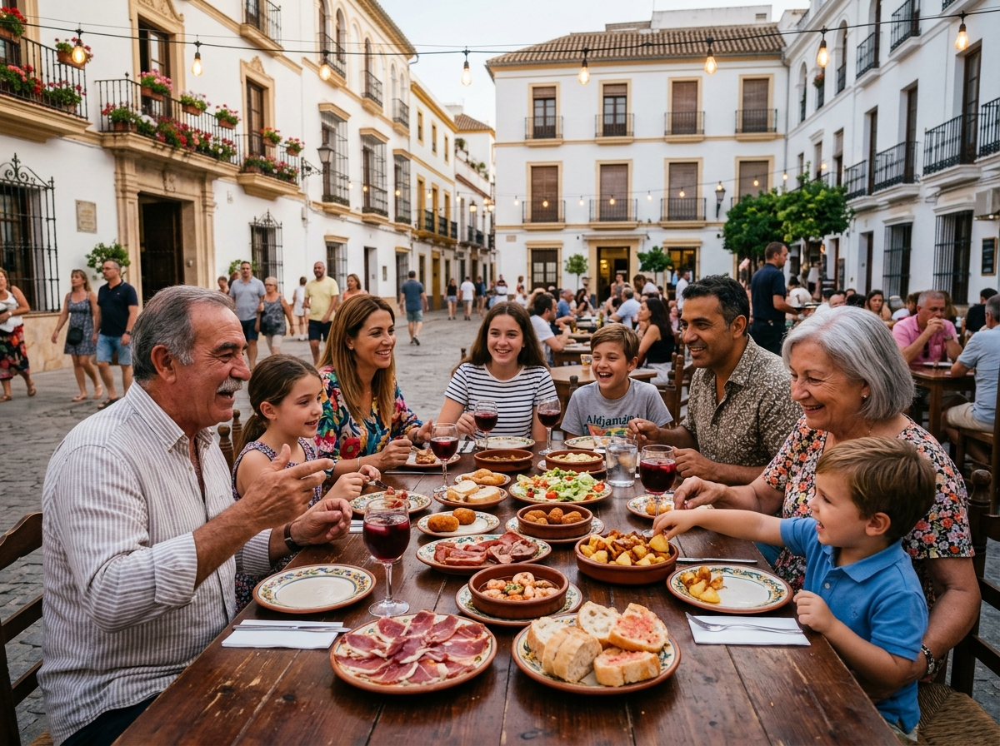